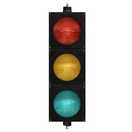
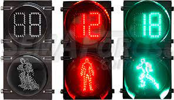
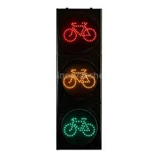
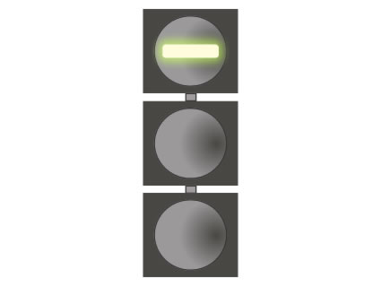

INVESTIGACIÓN
1-Semaforos Vehiculares.
Son los más comunes y están diseñados para controlar las carreteras y cruces. Estos semáforos siguen la secuencia de luces roja, amarilla y verde.
2-Semáforos Peatonales
Muestran símbolos o figuras de una persona caminando en verde para indicar que es seguro cruzar y un símbolo de una persona parada en rojo para señalar que los peatones deben esperar.
3-Semáforos de Ciclistas
Similar a los semáforos peatonales pero diseñados para carril bici, con símbolos específicos para bicicletas. Ayudan a regular el paso de los ciclistas en intersecciones y cruces con rutas de tráfico vehicular y peatonal.
4-Semáforos para Transporte Público
Algunas ciudades han implementado semáforos especiales para autobuses y tranvías, ofreciendo prioridad a estos modos de transporte público sobre el tráfico general.
5-Sistemas de Prioridad para Vehículos de Emergencia
Estos sistemas permiten a vehículos de emergencia como ambulancias, carros de bomberos y policía, controlar los semáforos para que se pongan en verde a medida que se acercan, facilitando su paso rápido a través del tráfico.
- Controladores de Tiempo Fijo
- Son los más básicos, operando en ciclos preestablecidos que cambian las luces en intervalos fijos, sin tener en cuenta las condiciones reales del tráfico.
- Sistemas de Detección de Vehículos
- Utilizan sensores en la carretera o cámaras para detectar la presencia de vehículos, ajustando los tiempos de los semáforos, reduciendo así el tiempo de espera innecesario.
- Sistemas Adaptativos de Control de Tráfico
- Sistemas Adaptativos de Control de Tráfico
FUNCIONAMIENTO